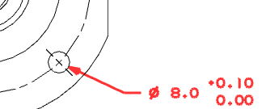
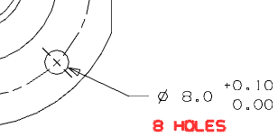

Dimension the diameter of the bolt hole that is below the horizontal centerline and on the right side of the flange.
Use only one arrow that points to the edge of the hole from the outside.
The hole can be a little larger than its modeled size, but no smaller.
Use the default tolerance value.
Use the correct precision for the tolerance values.

Append text to the bolt hole dimension that will show that all eight bolt holes have the same diameter and tolerance.
Place the appended text below the dimension.
